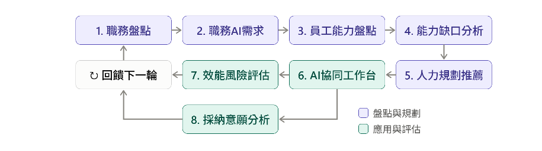
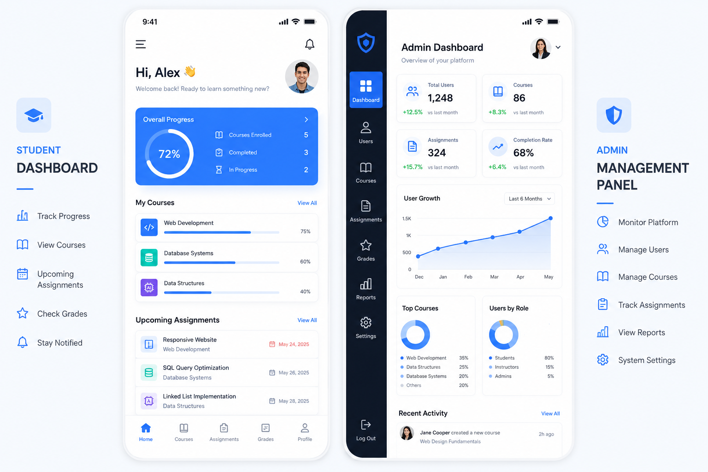
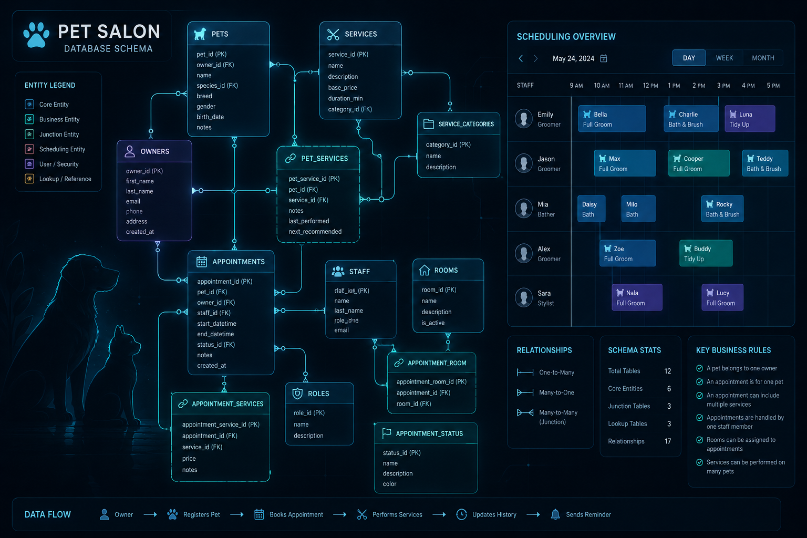
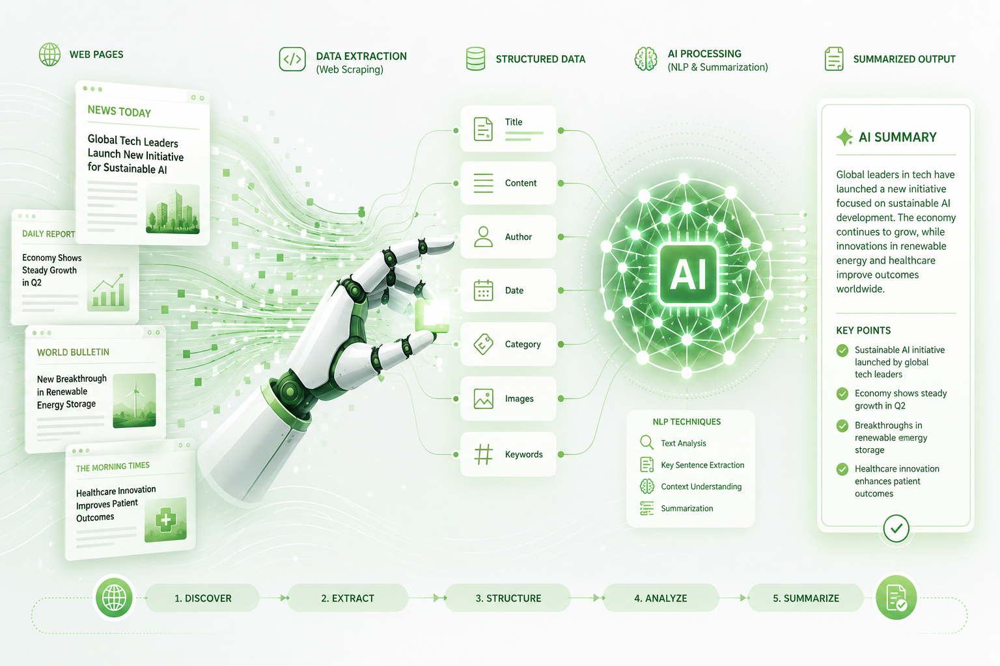
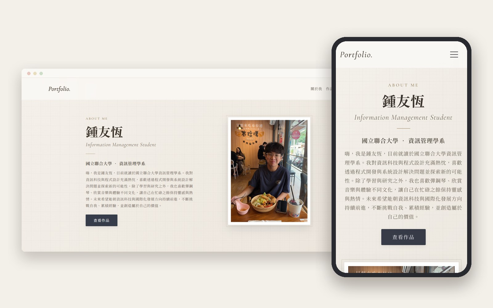

專題實作

微 AI 轉型行不行
MicroAI Transformation
對資源有限的微小型企業而言，AI 轉型賭不起，也等不起。本專題提出「滾動式升級」的轉型系統，以 PDCA 閉環讓轉型持續推進：
‧ 職務進化地圖：由 AI 分析每個職務需要哪些 AI 技能、要達到 Level 0–5 的哪個等級。
‧ 技能缺口補丁：透過自評與 AI 對話演練測出員工的真實起點，推薦學習資源補足缺口。
‧ AI 協同工作台：交叉比對工作日誌、成果與 AI 對話紀錄，分辨真正的應用與表演式的「AI 劇院」。
‧ 人力決策：依累積的數據比較培訓與招募的成本效益，協助經營者做出取捨。
課程成果

學生與管理者雙端成績管理系統
本專案為一款雙端角色權限設計的行動應用程式。
‧ 學生端功能：支援個人資料修改與個人歷史學期成績查詢。
‧ 管理者端功能：具備學生資料維護、課程資料建立、成績登錄管理與全院成績查閱之完整權限。

寵物美容院預約管理資料庫系統
針對寵物美容業務流程進行關聯式資料庫設計，實作前後端權限分流。
‧ 使用者端功能：提供直觀的線上寵物美容服務時段與項目預約功能。
‧ 管理者端功能：後台即時彙整、檢視所有客戶預約訂單與狀態排程。

自動化新聞爬蟲與智慧文本摘要系統
結合網路爬蟲與自然語言處理技術，自動抓取指定新聞網站的最新文章，去除重複連結後，再以 LSA（潛在語意分析）演算法挑出重點句，自動產生新聞摘要。

個人作品集網站
前端網頁設計課程的期末成果。以 HTML、CSS、JavaScript 搭配 Bootstrap，從零打造一個整理學習歷程的個人網站，課程結束後仍持續擴充內容。
‧ 視覺風格：以米白色調、襯線字體與一致的卡片樣式，建立安靜、有質感的整體風格。
‧ 響應式版面：運用格線系統，讓桌機、平板與手機都有合適的閱讀版面。
‧ 互動元件：實作程式碼彈出視窗、圖片輪播與文件線上預覽等功能。
管理學：中鼎工程企業實務訪談研究
本專案針對大型工程服務集團「CTCI 中鼎工程」進行業界同仁的深入實務調研。從前期設定訪談架構、撰寫嚴謹的訪談計劃書，到實際聯繫並深度訪談中鼎工程現職員工，最終將訪談精華、組織運作與管理理論相結合，凝聚產出兼具學術與實務價值的訪談報告書。
除了課程成果，也歡迎看看我的校外競賽經歷
前往比賽經歷 →